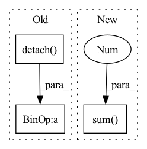

Pattern ID :2971
Before Change
l2QLoss.append(F.mse_loss(latent.detach(), q, reduction="none").mean(axis=(1, 2, 3)))
l1QLoss.append(F.l1_loss(latent.detach(), q, reduction="none").mean(axis=(1, 2, 3)))
l2QLoss.append(0.00001 * F.mse_loss(latent, q.detach(), reduction="none").mean(axis=(1, 2, 3)))
l1QLoss.append(0.00001 * F.l1_loss(latent, q.detach() , reduction="none").mean(axis=(1, 2, 3)))
l1QLoss = sum(l1QLoss)
l2QLoss = sum(l2QLoss)After Change
// summedProb = batchWiseLogit.sum(1)
posterior = OneHotCategorical(logits=batchWiseLogit)
prior = OneHotCategorical(probs=torch.ones_like(batchWiseLogit) / batchWiseLogit.shape[-1])
reg = torch.distributions.kl_divergence(posterior, prior).sum(-1 )
reg += compute_penalties(batchWiseLogit, allowed_entropy=0.1, individual_entropy_coeff=cv, allowed_js=4.0, js_coeff=cv, cv_coeff=cv, eps=Consts.Eps)
// reg = reg / diversity
regs.append(reg)
regs = sum(regs)In pattern: SUPERPATTERN
Frequency: 4
Non-data size: 3
Instances Fragment ID: 16236646
Project Name: xiaosu-zhu/mcquic
Commit Name: 6a7990547d3b9f68e7377cfc03ef1edd64929802
Time: 2021-03-24
Author: xiaosu.zhu@outlook.com
File Name: src/mcqc/losses/structural.py
M Class Name: CompressionLossTwoStage
N Class Name: CompressionLossTwoStage
M Method Name: forward(8)
N Method Name: forward(8)
M Parent Class: nn.Module
N Parent Class: nn.Module
M File Name: src/mcqc/losses/structural.py
N File Name: src/mcqc/losses/structural.py
M Start Line: 53
M End Line: 90
N Start Line: 69
N End Line: 90
Before Change
quantized = self.decode(codes)
diff = (x - quantized).pow(2).mean()
quantized = quantized + x - x.detach()
if self.training:
self.replace_dead_codes(x)
After Change
// We do the expiry of code at that point as buffers are in sync
// and all the workers will take the same decision.
self.expire_codes_(x)
ema_inplace(self.cluster_size, embed_onehot.sum(0 ) , self.decay)
embed_sum = x.t() @ embed_onehot
ema_inplace(self.embed_avg, embed_sum.t(), self.decay)
cluster_size = (laplace_smoothing( Fragment ID: 16236645
Project Name: caillonantoine/rave
Commit Name: b58cba5d330c227f2122bc07fcbf7ed068eb91be
Time: 2023-01-24
Author: caillon@ircam.fr
File Name: rave/quantization.py
M Class Name: VQ
N Class Name: EuclideanCodebook
M Method Name: forward(2)
N Method Name: forward(2)
M Parent Class: nn.Module
N Parent Class: nn.Module
M File Name: rave/quantization.py
N File Name: rave/quantization.py
M Start Line: 68
M End Line: 97
N Start Line: 163
N End Line: 187
Before Change
for latent, q in zip(latents, quantizeds):
l2QLoss.append(F.mse_loss(latent.detach(), q, reduction="none").mean(axis=(1, 2, 3)))
l1QLoss.append(F.l1_loss(latent.detach(), q, reduction="none").mean(axis=(1, 2, 3)))
l2QLoss.append(0.01 * F.mse_loss(latent, q.detach() , reduction="none").mean(axis=(1, 2, 3)))
l1QLoss.append(0.01 * F.l1_loss(latent, q.detach(), reduction="none").mean(axis=(1, 2, 3)))
// regs.append(-1e-4 * ((latent ** 2).mean((1, 2, 3)) + (q ** 2).mean((1, 2, 3))))
After Change
posterior = OneHotCategorical(logits=batchWiseLogit)
prior = OneHotCategorical(probs=torch.ones_like(batchWiseLogit) / batchWiseLogit.shape[-1])
reg = torch.distributions.kl_divergence(posterior, prior).sum(-1 ) + compute_penalties(batchWiseLogit, allowed_entropy=0.1, individual_entropy_coeff=1.0, allowed_js=4.0, js_coeff=1.0, cv_coeff=1.0, eps=Consts.Eps)
regs.append(reg)
// reg = reg / diversity
regs = sum(regs) Fragment ID: 16236644
Project Name: xiaosu-zhu/mcquic
Commit Name: 8c71ec66b33adcc34c3c3769caf2b9087dd03ff1
Time: 2021-03-31
Author: xiaosu.zhu@outlook.com
File Name: src/mcqc/losses/structural.py
M Class Name: CompressionLossTwoStage
N Class Name: CompressionLossTwoStage
M Method Name: forward(6)
N Method Name: forward(6)
M Parent Class: nn.Module
N Parent Class: nn.Module
M File Name: src/mcqc/losses/structural.py
N File Name: src/mcqc/losses/structural.py
M Start Line: 130
M End Line: 151
N Start Line: 146
N End Line: 151